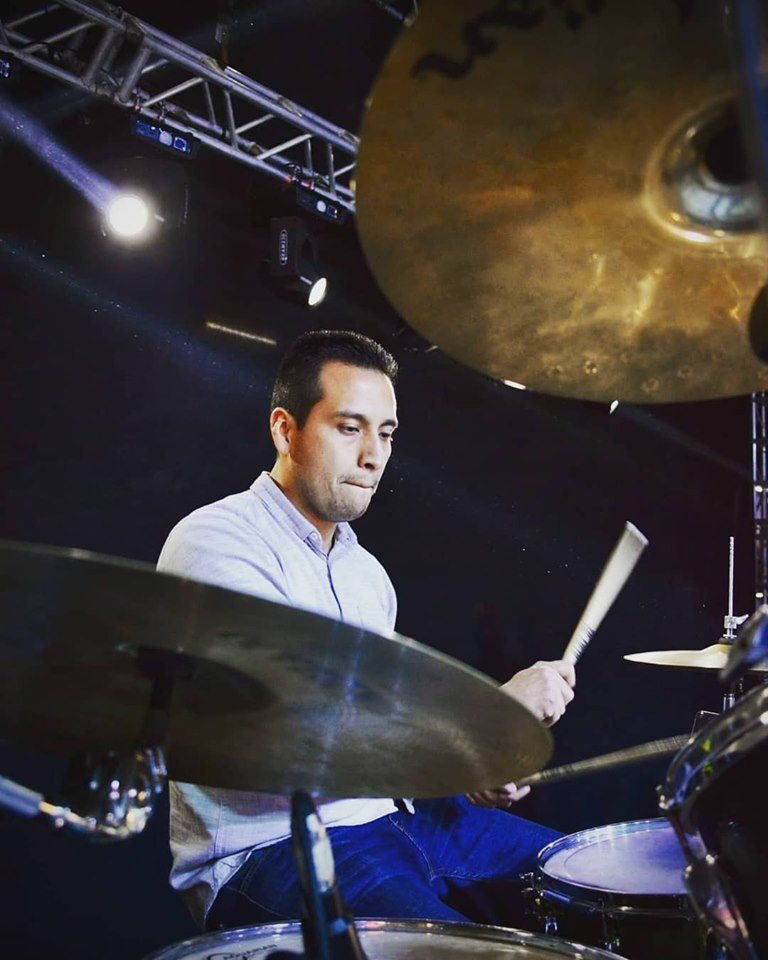
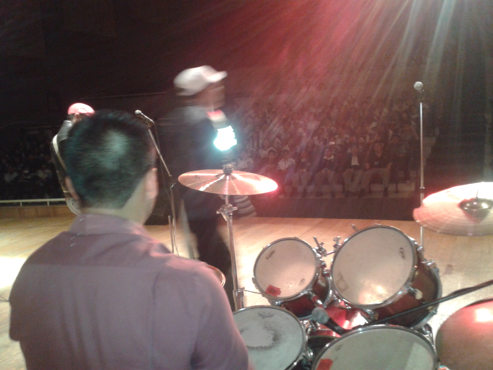
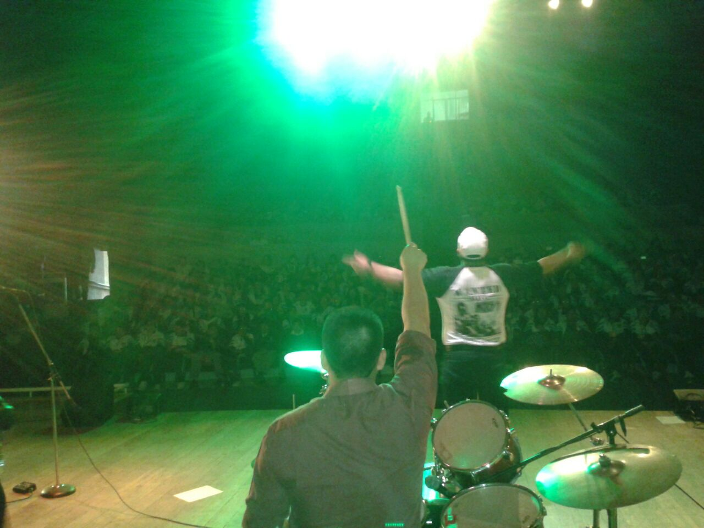

Como músico
Una de las cosas que me gustan muchísimo es la música. Me encanta casi de todo especialmente el rock en español e inglés. Al decir que soy músico es porque toco la batería. Actualmente por la situación solo practico en mi hogar. Sin embargo, duré 10 años con un grupo de covers el cual se llama Roospeeck. Tocábamos en bares, en plazas, en teatros y llegamos a tocar en Six Flags en un concurso. Mis amigos y yo pasamos muchas aventuras y hacíamos lo que nos gusta en los ratos libres. El tocar para mucha gente es una sensación que es difícil describir con palabras. La mayor audiencia para la que toque fue de aproximadamente 2000 personas y fue lo máximo. Siempre tuve mucho cuidado ya que en ese ambiente hay muchas cosas malas también. Pero hay que ser consciente de la situación y evitar lo más posible.
  